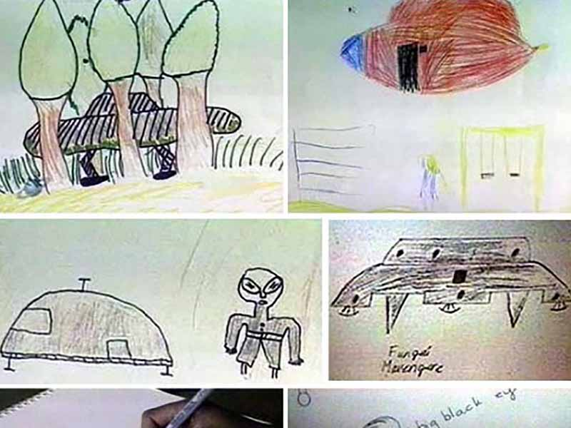

September 16, 1994.

On September 16 1994, sixty-two pupils at Ariel School near Ruwa, Zimbabwe, aged six to twelve, reported seeing one or more silver, disc-like objects descend from the sky and land in a field of brush just outside school property. The sighting happened around 10:00 a.m. during the mid-morning break, while teachers were in a staff meeting and the only adult nearby was a woman running the tuckshop. The children described between one and four big-eyed beings dressed in black who approached them. Many ran, but some older pupils stayed and watched. Several children showed visible distress afterward, and when they told teachers what they had seen, they were initially dismissed. The school was a private fee-paying institution, with pupils coming from diverse backgrounds, including local white, Black Zimbabwean, and Asian families.
The case drew rapid international attention. The story aired on ZBC Radio, and BBC correspondent Tim Leach visited the school on 19 September to film interviews, later remarking on the intensity of the children's distress. UFO researcher Cynthia Hind interviewed pupils shortly after and reported that their accounts aligned closely. In November, Harvard psychiatrist John Mack interviewed the witnesses and recorded that the beings had telepathically conveyed an environmental message, with children recalling warnings about pollution and environmental damage. Hind also noted that cultural backgrounds influenced how children processed the event, with some initially fearing the figures were tikoloshes—mischievous spirits from local folklore.
Skeptics offer several alternative explanations. Two days earlier, a bright fireball—identified by researcher Brian Dunning as the re-entry of a Russian rocket booster—had streaked across southern African skies, triggering widespread UFO reports in the region. Dunning argues that initial group interviews allowed cross-contamination of the children's stories, and that Mack, a known environmentalist who interviewed them two months later, may have inadvertently prompted the environmental message, which was absent from very early reports. Other proposals include mass hysteria, a student prank, a misidentified dust devil, and researcher Gideon Reid's hypothesis that the children may have observed a touring educational puppet show featuring large, grey figures.
Many witnesses stand by their accounts as adults. Some recall lingering fears that the beings would return, while others have created artwork based on the experience. However, in the 2023 Netflix documentary Encounters, former student Dallyn Vico claimed he started the incident by pointing at a shiny rock in the sun to distract classmates and skip a lesson. While his claim directly contradicts the detailed accounts of dozens of other witnesses who describe seeing figures and crafts, skeptics cite it as a potential explanation for how a playground rumor could trigger mass excitement.